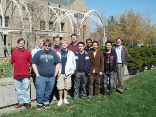
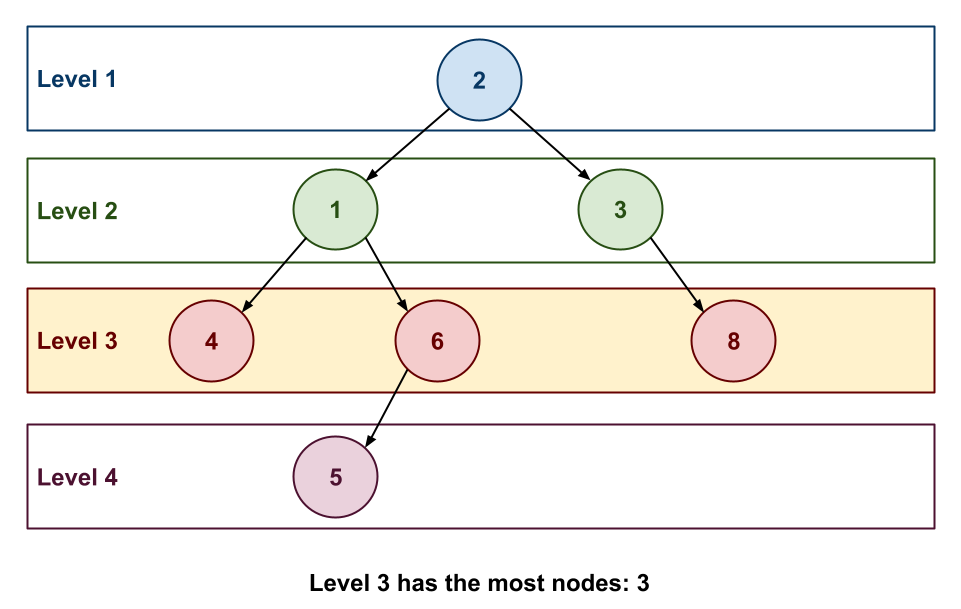

While working for Dr. Thain in the Cooperative Computing Lab, the instructor had to compose large scientific workflows that ran across many (ie. hundreds) of machines spread across the country in different compute clusters and data centers. To maximize the efficiency of these large scale computations, it was necessary to determine if there were any concurrent structures and thus opportunities for parallelization.
Fortunately, most scientific workflows involve composing many different utilities that perform a specialized task by taking the outputs of one program and using them as inputs to other utilities. One way to visualize such workflows is by forming a tree or DAG as shown below.

In the tree below, we have four levels of nodes:
-
Level 1: This has the root node and has a width of
1. -
Level 2: This is the second level and has a width of
2since it only has the nodes1and3. -
Level 3: This is the third level and has a width of
3since it has the nodes4,6, and8. -
Level 4: This is the last level and has a with of
1.
As can be seen, the maximum width of this tree is 3. This means if
that if we were to execute this workflow on multiple machines, then we
could have a maximum of 3 concurrent tasks (and thus only need 3
different machines for maximum efficiency).

Since it has been a long time since the instructor has done anything related to distributed systems, your task is to read in workflows represented as binary trees and identify which level in each tree has the most nodes (and thus concurrency).
Input¶
You will be given a series of workflows represented by binary trees in pre-order traversal order.
Example Input¶
2 1 4 -1 -1 6 5 -1 -1 -1 3 -1 8 -1 -1
Note, the -1 in the input denotes that there is no Node there (ie. NULL).
Output¶
For each workflow, determine where it has its maximum concurrency by finding the level with the most nodes in the binary tree and output a message in the following format:
Level $MAX_LEVEL has the most nodes: $MAX_NODES
Example Output¶
Level 3 has the most nodes: 3
Note, if there are multiple levels with the maximum number of nodes, then choose the level with the lowest value (ie. nearer to the root).
Algorithmic Complexity¶
For each input test case, your solution should have the following targets:
| Time Complexity | O(N), where N is the number of nodes in the binary tree. |
| Space Complexity | O(N), where N is the number of nodes in the binary tree. |
Your solution may be below the targets, but it should not exceed them.
Submission¶
To submit your work, follow the same procedure you used for Reading 01:
$ cd path/to/cse-30872-su26-assignments # Go to assignments repository
$ git switch master # Make sure we are on master
$ git pull --rebase # Pull any changes from GitHub
$ git switch -c challenge15 # Create and checkout challenge15 branch
$ $EDITOR challenge15/program.cpp # Edit your code
$ git add challenge15/program.cpp # Stage your changes
$ git commit -m "challenge15: done" # Commit your changes
$ git push -u origin challenge15 # Send changes to GitHub
To check your code, you can use the .scripts/check.py script or curl:
$ .scripts/check.py
Checking challenge15 program.cpp ...
Result Success
Time 0.00
--------------------
Score 6.00 / 6.00
Grade 1.00 / 1.00
$ curl -F source=@challenge15/program.cpp https://dredd.h4x0r.space/code/cse-30872-su26/challenge15
{"result": "Success", "score": 6, "time": 0.0319976806640625, "value": 6, "status": 0}
Acknowledgments¶
If you collaborated with any other students or received help from AI tools on this assignment, please described this support in the description of your Pull Request.